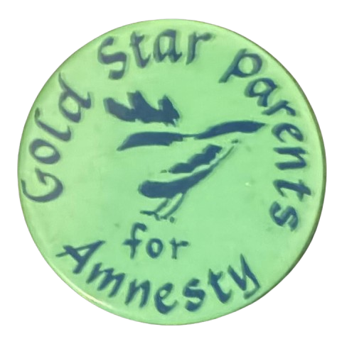

I picked this up from Capitol Vintage yesterday off one of my regulars Basel. The Lipizzan (or Equus caballus) comes from what is modern day Slovenia while is was the Hapsberg Empire (1282–1918). They are known as the "ballerinas of the horse world" for their advanced manuevers caple in battle. However, the Lipizans came close to extinction while war swept through the area during World War 2. Under the direction of General George Patton, 70 white stallions were rescued during "Operation Cowboy" from the Spanish Riding School in Viena. The story has been dramatized in Walt Disney's "Miracle of the White Stallions" staring Robert Taylor as Alois Podhajsky. The Herrmann Family came to the United States in 1962 with their 3 Royal Lipizzan Horses escaping Europe. They settled in Myakka City, just east of Sarasota in Florida. The Herrmann's are now onto their 5th Generation of rider/trainers. They are still open for operation to watch these combat horses run around a muddy track in Manatee County. "The Lipizzans have performed for dignitaries, royalty, and military leaders. Now these horses perform for you". A ticket to this historic show will cost you $22 for an adult. While coolers are premitted, they ask you not to bring any alcoholic beverages. There is also a concession stand that sells hot dogs (beef), popcorn, chips, canned soda, and bottled water.
Here is a pin I picked up from Circle with a similar design to the previous one. This pin I was actually able to track down to being from around 1975-1977. The Gold Star Parents is an organization that formed after WWI for parents who lost their child in the armed forces. Amnesty in this case has to do with an unconditional pardon for all who resisted the draft during the Vietnam War. Conscription, or the draft, happend between 1965 - 1973 and over 1.3 million men were drafted. In short, the GSPFA wanted amnesty for both draft resisters and deserters. Draft resisters were those who participated in anti-war protests on college campuses, had easy access to Europe or Canada. (The majority of these being middle-upper class, college-educated, white men) Deserters represents people who often times had no access to money (or had the knowledge) to resist the draft. Once someone was drafted, they could be arrested attempting to cross the border into Canada. Deserters were heavily black and Hispanic, poor, younger and less-educated. Proclomation 4483 was passed on the first day Jimmy Carter held office in 1977. It granted unconditional pardons to all Americans who evaded the draft of the Vietnam War. (They did have to appear in front of a judge and swear allegience to the United States and do X ammount of community service.) It did not pardon deserters, which left any deserters who did make it to Canada (or other countries) never able to cross the border back into the United States without being arrested. The graphic seems to be an eagle turning its back? I am not sure ...